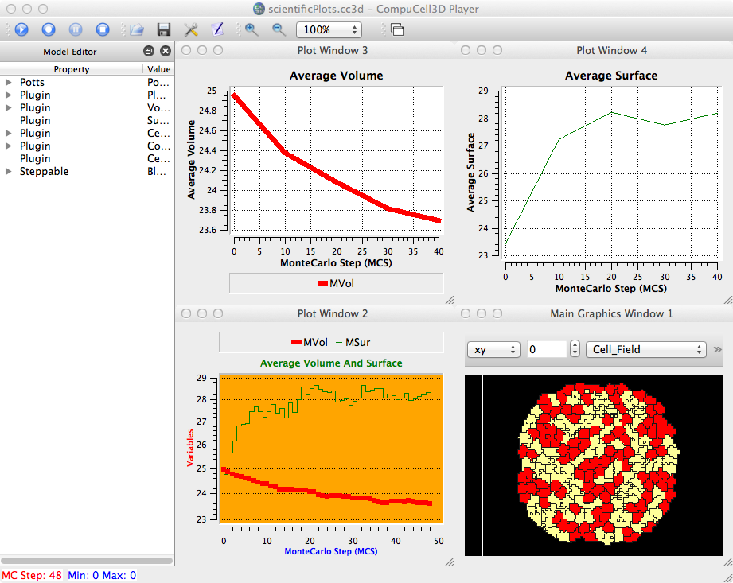
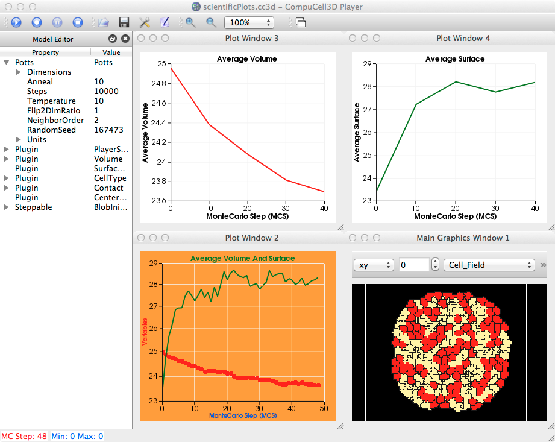
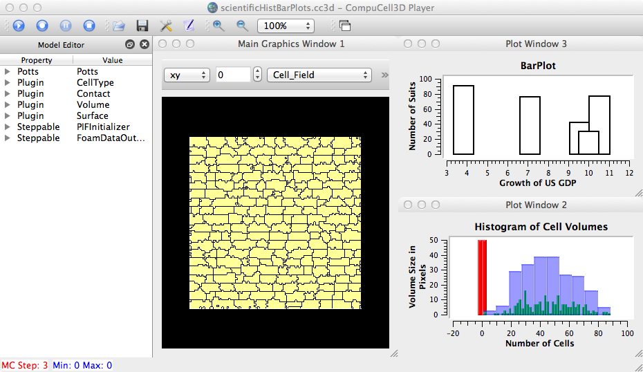
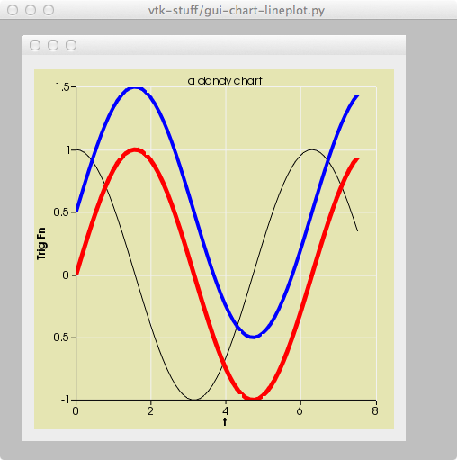
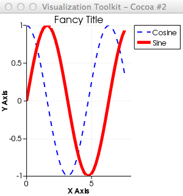

We examine the latest version of VTK (5.10.1) for its plotting functionality. Plots are performed via vtkChartXY class. Rf. ~/dev/VTK5.10.1/Charts/Testing/Python for examples.
(Note: ~/.config/Biocomplexity$ cp cc3d_default.ini cc3d_plots.ini)
Contents[hide] |



Rf. examples_PythonTutorial/scientificHistBarPlots
~/dev/vtk-stuff$ ty gui-chart-lineplot.py
#
# ------- gui-chart-lineplot.py ------------
import sys
from vtk import *
import math
from vtk.qt4.QVTKRenderWindowInteractor import QVTKRenderWindowInteractor
from PyQt4 import Qt
from PyQt4 import QtGui
class test(Qt.QMainWindow):
def __init__(self, parent=None):
Qt.QMainWindow.__init__(self, parent)
# self.setWindowTitle(self.tr("PyQt4 vtkChartXY"))
self.setWindowTitle(self.tr("vtk-stuff/gui-chart-lineplot.py"))
self.workspace = Qt.QWorkspace()
self.setCentralWidget(self.workspace)
self.frame = QtGui.QFrame(self.workspace)
self.hbox = QtGui.QHBoxLayout()
self.widget = QVTKRenderWindowInteractor(self.frame)
self.widget.Initialize()
self.widget.Start()
self.chart = vtkChartXY()
# Create a table with 3 arrays of points
table = vtk.vtkTable()
arrX = vtk.vtkFloatArray()
arrX.SetName("X Axis")
arrC = vtk.vtkFloatArray()
arrC.SetName("Cosine")
arrS = vtk.vtkFloatArray()
arrS.SetName("Sine")
arrS2 = vtk.vtkFloatArray()
arrS2.SetName("Sine2")
numPoints = 69
inc = 7.5 / (numPoints - 1)
for i in range(0,numPoints):
arrX.InsertNextValue(i*inc)
arrC.InsertNextValue(math.cos(i * inc))
arrS.InsertNextValue(math.sin(i * inc))
arrS2.InsertNextValue(math.sin(i * inc) + 0.5)
table.AddColumn(arrX)
table.AddColumn(arrC)
table.AddColumn(arrS)
table.AddColumn(arrS2)
# Now add the line plots with appropriate colors
line = self.chart.AddPlot(0)
line.SetInput(table,0,1)
line.SetColor(0,0,0,255)
line.SetWidth(1.0)
line = self.chart.AddPlot(0)
line.SetInput(table,0,2)
line.SetColor(255,0,0,255)
line.SetWidth(5.0)
line = self.chart.AddPlot(0)
line.SetInput(table,0,3)
line.SetColor(0,0,255,255)
line.SetWidth(4.0)
self.view = vtkContextView()
# self.chart.AutoAxesOff() # ??
self.chart.SetTitle('a dandy chart')
self.chart.GetAxis(vtkAxis.BOTTOM).SetTitle('t')
self.chart.GetAxis(vtkAxis.LEFT).SetTitle('Trig Fn')
self.view.GetScene().AddItem(self.chart)
# self.line = self.chart.AddPlot(vtkChart.LINE)
# self.line.SetInput(self.table, 0, 1)
self.ren = self.view.GetRenderer()
self.ren.SetBackground(0.9,0.9,0.7) # optional background color
self.renWin = self.widget.GetRenderWindow()
self.renWin.AddRenderer(self.ren)
self.hbox.addWidget(self.widget)
self.frame.setLayout(self.hbox)
self.workspace.addWindow(self.frame)
if __name__ == "__main__":
app = Qt.QApplication(sys.argv)
mainwindow = test()
mainwindow.show()
sys.exit(app.exec_())

In [17]: !more ~/dev/vtk-stuff/legend.py
from vtk import *
import math
table = vtkTable()
arrX = vtkFloatArray()
arrX.SetName("X Axis")
table.AddColumn(arrX)
arrC = vtkFloatArray()
arrC.SetName("Cosine")
table.AddColumn(arrC)
arrS = vtkFloatArray()
arrS.SetName("Sine")
table.AddColumn(arrS)
numPoints = 42
inc = 7.5 / (numPoints-1)
table.SetNumberOfRows(numPoints)
for i in range(numPoints):
table.SetValue(i, 0, i * inc)
table.SetValue(i, 1, math.cos(i * inc))
table.SetValue(i, 2, math.sin(i * inc))
view = vtkContextView()
chart = vtkChartXY()
chart.SetTitle('Fancy Title')
chart.GetTitleProperties().SetFontSize(16)
chart.SetShowLegend(True)
leg = chart.GetLegend()
leg.SetInline(False)
leg.SetHorizontalAlignment(leg.RIGHT) # LEFT, CENTER, RIGHT
leg.SetVerticalAlignment(leg.TOP) # BOTTOM, CENTER, TOP
view.GetScene().AddItem(chart)
line = chart.AddPlot(vtkChart.LINE)
line.GetPen().SetLineType(vtkPen.DASH_LINE)
line.SetInput(table, 0, 1)
line.SetColor(0, 0, 255, 255)
line.SetWidth(2.0)
line = chart.AddPlot(vtkChart.LINE)
line.SetInput(table, 0, 2)
line.SetColor(255, 0, 0, 255)
line.SetWidth(5.0)
view.GetInteractor().Initialize()
#view.GetInteractor().Start()
